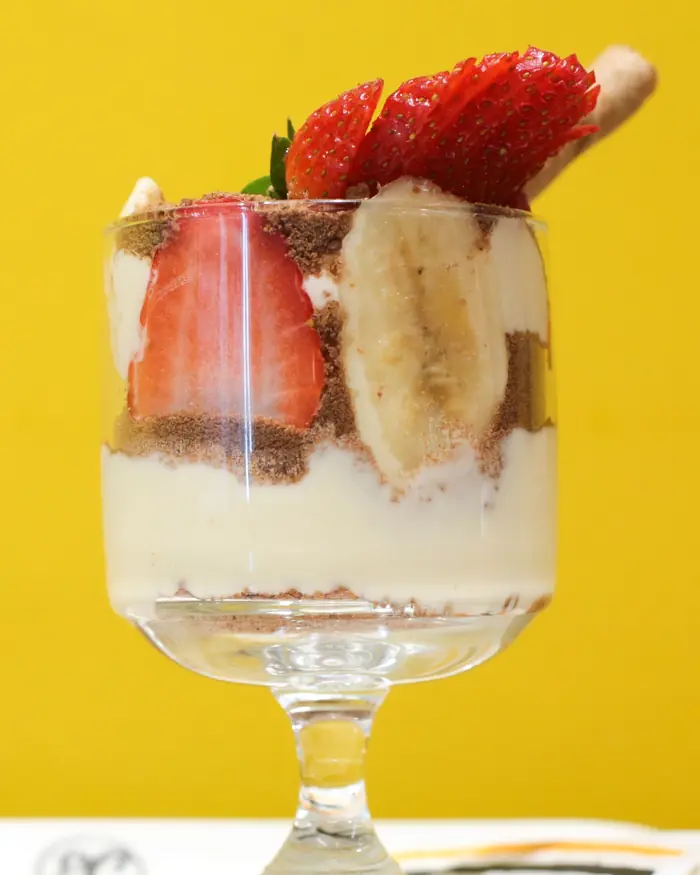
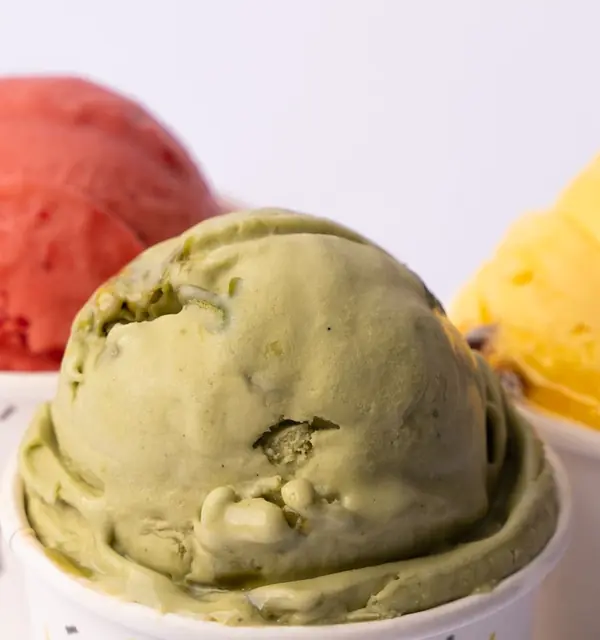
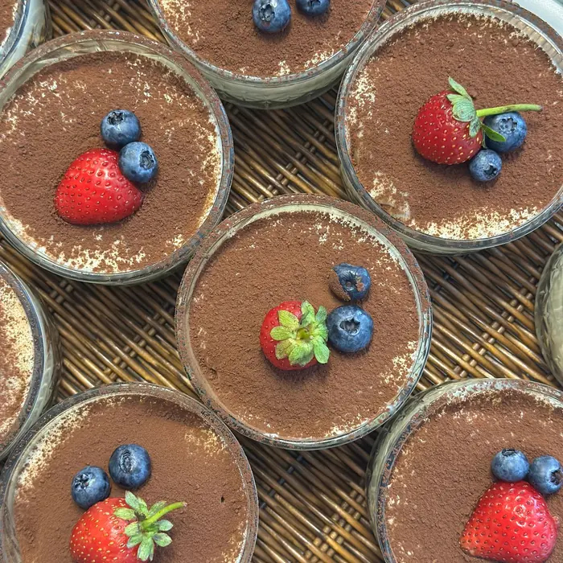
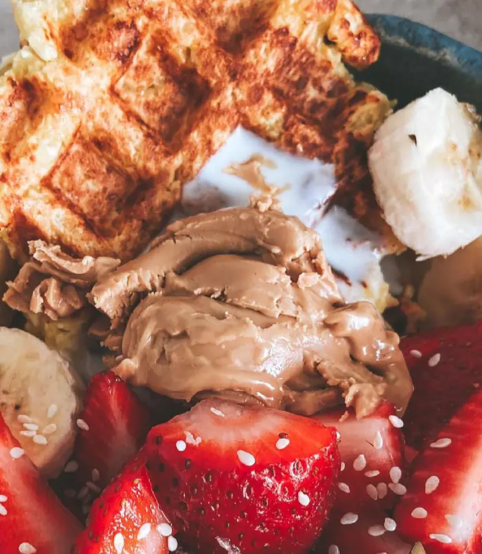
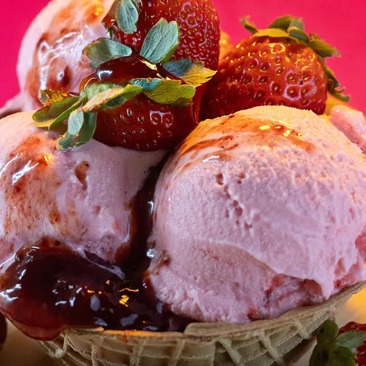
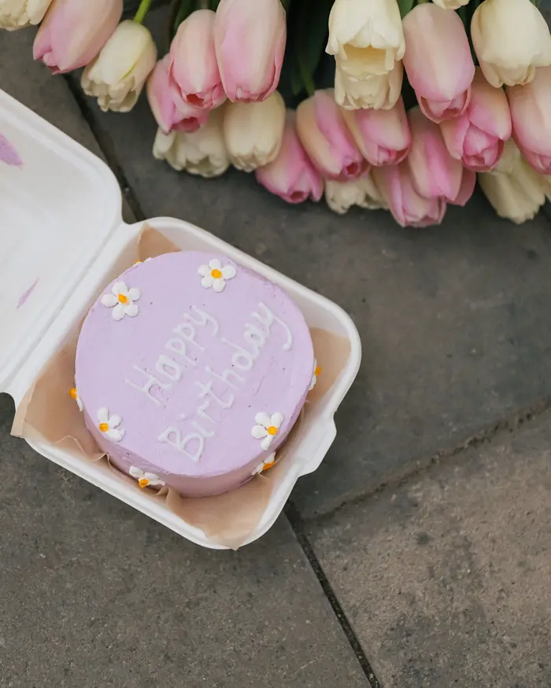
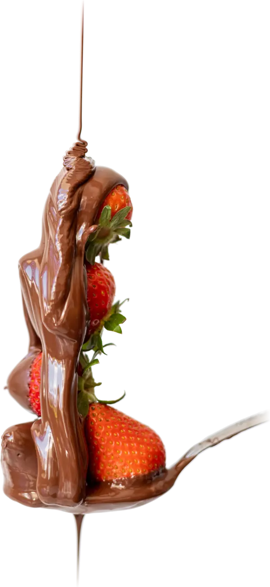

12:30 – 21:30
CUPISTAN, Gebze. Cup bi mutluluk, Kap bi mutluluk.
Gebze · iki kapı
KAP: kap tatlı, magnolya, dondurma
- İçine bir şey konan şey.
- Cupistan'da: içine mutluluk konan şey. Biz ikincisinden anlarız.

Magnolya
Kat kat: bisküvi, krema, meyve. Kaşık dibe vurmadan bırakılmaz.
Dondurma
Top top, kap kap. Bir top hep az gelir.
Kap tatlı
Tepeden bakınca hepsi aynı. Kaşığı daldırınca anlarsın.KAPRİS: günün ekleri
Sebebi olmayan istek. Cupistan'da: eklerin rengini seçmek.
- 01 pembeçizgili kaplama
- 02 yeşilfıstık kırıntılı
- 03 kahvekakao kırıntılı
- 04 kırmızıparlak kaplama
bugünün vitrini@cupistantr ↗
dokun: bir lokma

Kova Waffle Menü: kapış kapış gidiyor
250 lira
Kovanın dibine kadar waffle; üstü sos, meyve, dondurma. Siyah & Beyaz Kova da var.

Kapak olsun: özel gün pastası
Doğum günü, yıl dönümü, “özür dilerim”. Lafı uzatma; son sözü pasta söylesin.

KAPI: şubeler ve saatler. Kabın dünyaya açıldığı yer.
10:00 – 01:00
Osman Yılmaz
İlyas Uzuner Cd. No:15/A, Gebze
10:00 – 01:00
cuma ve cumartesi 02:00'ye kadar
KAP! Kap bi mutluluk.
